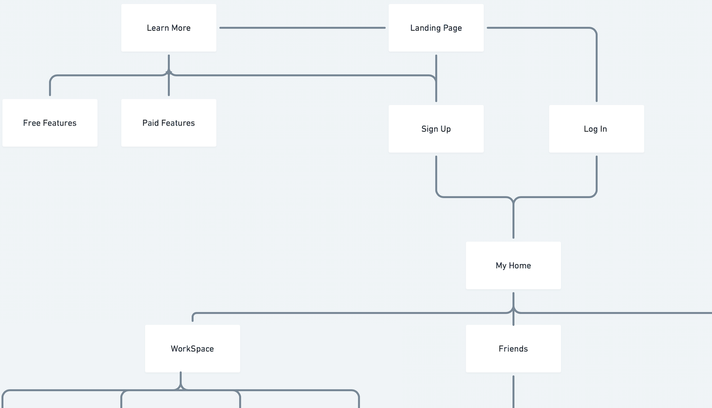
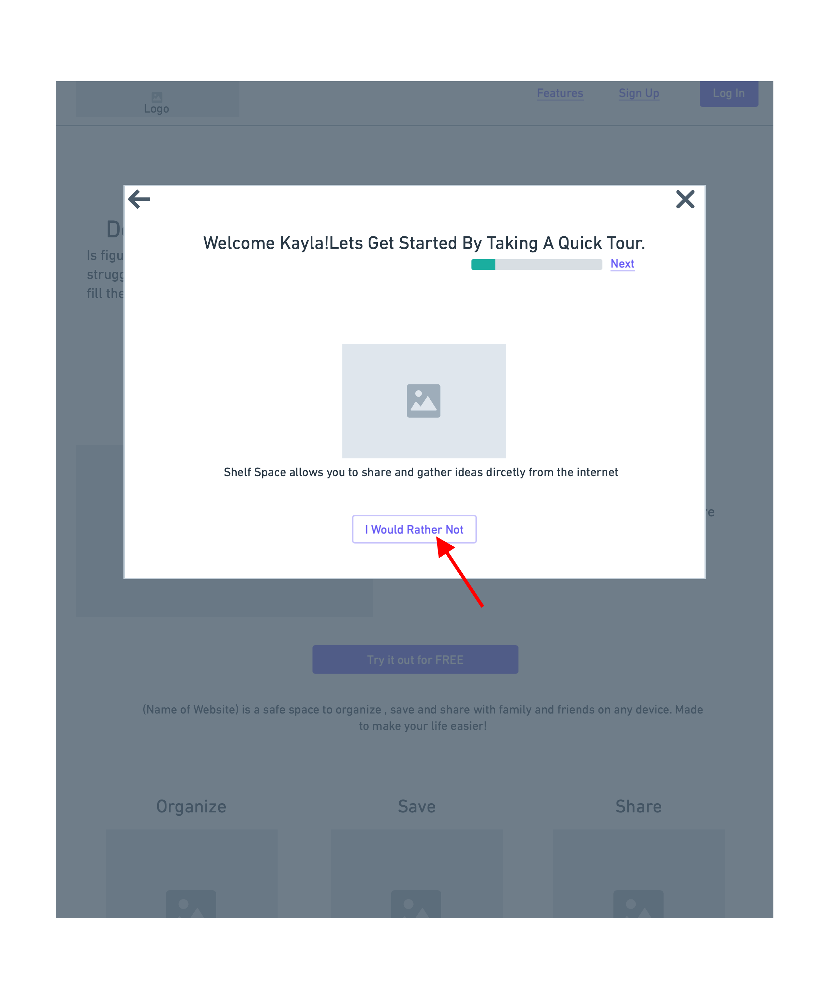
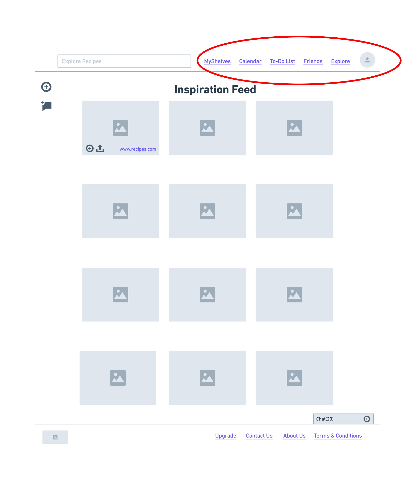
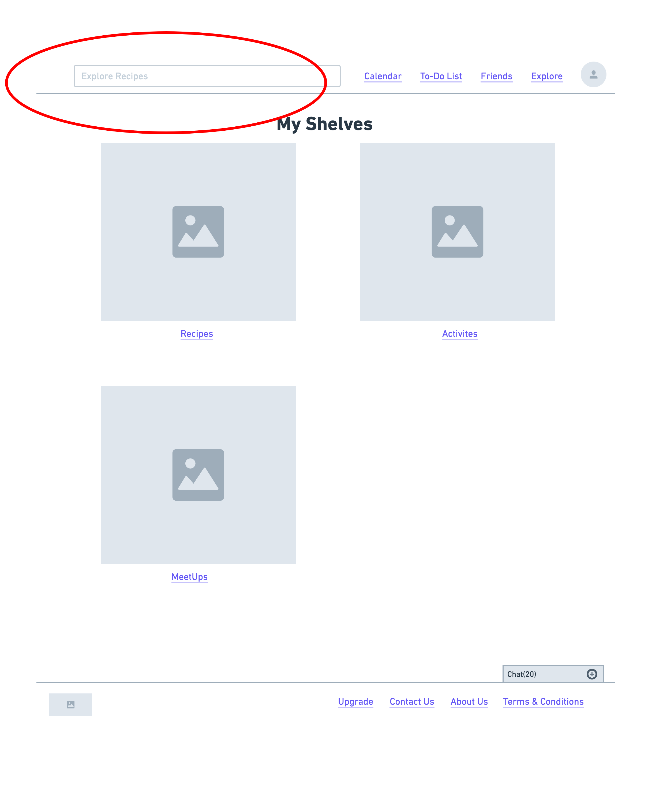
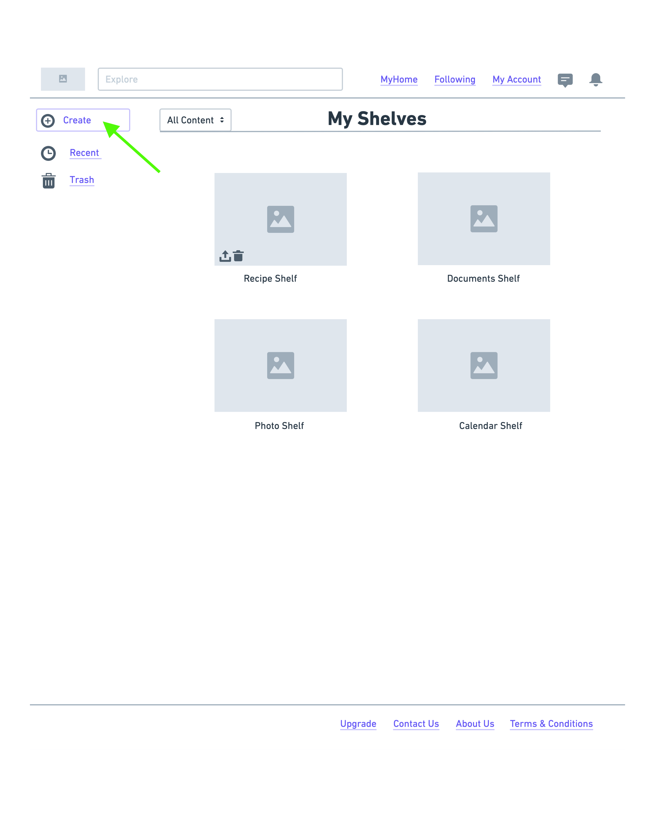
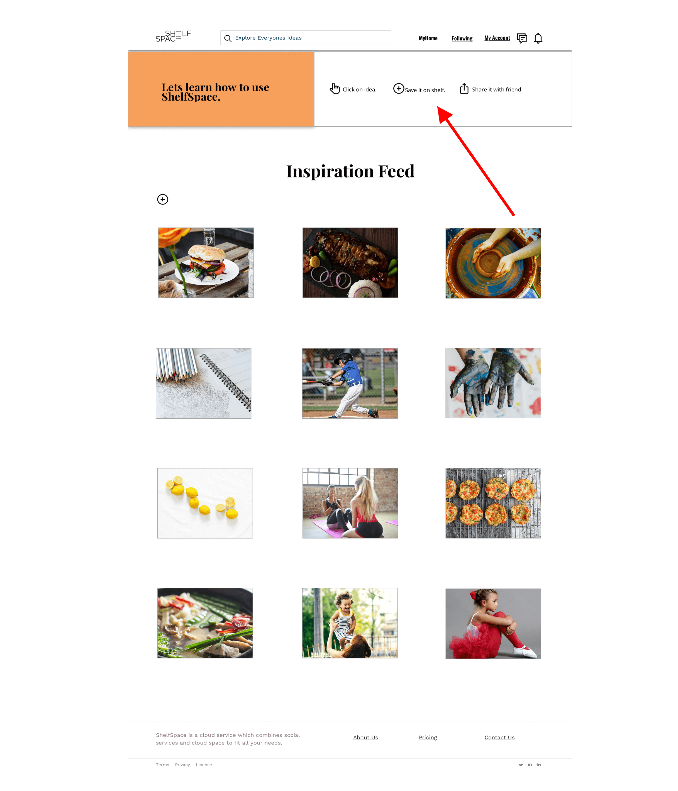
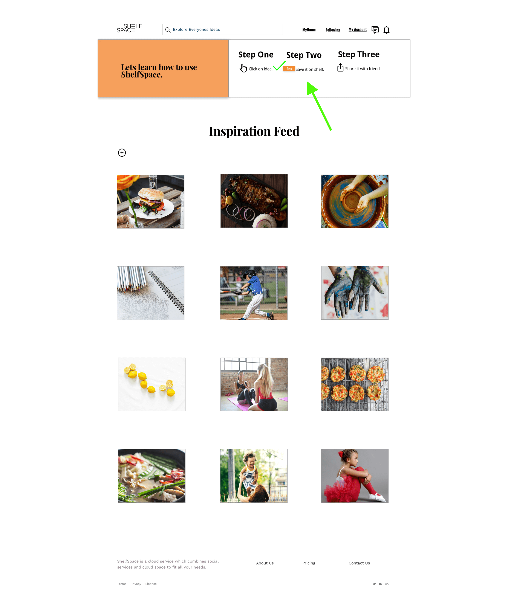

We present ShelfSpace, a website that seamlessly allows users to combine all aspects of cloud storage with the benefits that you receive on a social platform. Shelfspace allows storage for all types of files (docs, photos, links, events and creative ideas) with an advanced social platform. This allows users to share and collaborate on a public or private forum with friends, family, and like-minded people. Lastly, the platform supports optimal organization allowing files to be pre-organized in either a public or private space depending on the user's preferences.
The cloud storage platform is saturated. Shelfspace wished to find a unique approach to infiltrate the market and offer a unique approach to providing a cloud storage service. Ultimately, it was important to eliminate the amount of sites used while creating a seamless process for organization.
The task at hand was to design a cloud storage platform that catered to an untapped market. There is an already saturated cloud storage market , the only way to find a unique approach would be to ask the users who benefit from such a resource. In addition to finding a new approach to making a name for ourselves in the cloud storage universe our client was very concerned with the lack of logical organization that appeared in current cloud storage options. The viable solution resulted in our creation of ShelfSpace, a one stop shop for all the users cloud storage needs, including viable organization options and enhanced social collaboration.
We present ShelfSpace, a website which seamlessly allows users to combine all aspects of cloud storage with the benefits that you recieve on a social platform. Shelfspace allows storage for all types of files (docs, photos, links, events and creative ideas) with an advanced social platform. This allows users to share and collaborate on a public or private forum with friends, family, and like minded people. Lastly, the platform supports optimal organization allowing files to be pre-organized in either a public or private space depending on the users preferences.
After a in depth analysis of our main competitors Pinterest, Google Drive, and Dropbox the facts showed that the three competitors have many of the same strengths with little variations which allow them to stand apart from one another. Pinterest focuses primarily on creative audiences and defines themselves as being a visual platform. Google Drive broadens its horizons while committing to allow users to store, access and share documents all in one secure space. Lastly, Dropbox sets itself apart by offering different Membership options to users to cater to the individual needs. The opportunities for a new company are prevalent after deep review of its competitors. First, the new site must be very well organized and allow users to personalize their pages to share with the public space. Furthermore, collaboration must be extended in new and creative ways such as chat rooms and a social sharing space. Also there are many other niches which are not being targeted at this point. The future company should target one of these niche audiences to reach and help a greater depth of specified users.
It is important that a new site breaking into the cloud service market maintains the strengths found in its competitors without carrying over their weaknesses. There is room for a new competitor in the market if said competitor is able combine the cloud service with the social sphere offered from Competitors like Pinterest. Targeting a new niche market those ages 16-40 who crave a space to share their important documents while being able to interact with like-minded people all in the same safe and secure space creates a space for a site such as ShelfSpace.
With knowledge of our competitors, cloud storage sites I surveyed people through sites such as slack, facebook, and blogs. I launched this user survey to obtain answers on how to best suit the users needs and solve the current problems users were facing on cloud storage sites. From this feedback the problem addressed by our client was solidified: between work, family, and personal files, it’s easy to get disorganized. When you’re working on multiple platforms to store and share personal and professional life documents, streamlined workflow is inhibited. Furthermore, users wished to have a social platform in the same place as their platform that held important documents.
Using the quantitative and qualitative data from interviews and survey results, I defined the two target group profiles Kate Adams (Teacher, 29) and Amy Davis (Real Estate Agent, 36) to better empathize with my main user groups and prioritize goals according to their needs
To visualize and make more tangible the individual steps that a user makes during the course and its possibilities; I have created a corresponding user flows.
Our first user flow showed users steps to view more about the site before signing up, creating a new account and adding friends in order to customize their experience.
Based on the insights gained from the initial content audit and competitor analysis with potential users, I defined the sitemap for ShelfSpace and then evaluated it via tree tests with potential users.
With low-fidelity Wireframes, the general structure of the website could easily be tested in usability tests. Without much effort, adjustments could be made before going into the much more time consuming digital implementation. It was found that adjustments to the navigation bar needed to be altered to create an intuitive navigation system. Furthermore, alterations to the “how to use the site” were found to be necessary.

When asked to navigate through the sign up version of the onboarding process most users opted not to participate in the “how to use ShelfSpace” part of the process. I was informed that most users will skip this process or quickly click through the process not allowing time to retain information.
To ratify this pain point in my second iteration I choose to place a “learn how to use ShelfSpace” section on the landing page which automatically disappears after you naturally complete the task while using the site.

When asked to navigate further through the site to create new content and add it to shelf users were confused and felt that the navigation felt cluttered.
I made the navigation more intuitive by narrowing down user pathways and adding recognizable icons which uses had been explained when users first entered the site during the “how to use ShelfSpace” tutorial.

Finally, when asked to add content after viewing their home page users were confused by the navigation of this process. Users were also concerned with how their privacy would be made a main priority on our site.
To solve these concerns a more intuitive process for adding content was created as well as all content, private and public tabs and options were created which were easily identifiable.
The visual design was developed by iterating from mood board to the UI kit and finally to the creation of the style guide.


Here user testing showed that some small alterations that needed to be done to the call to action buttons on the screen to improve usability. Users prefer the Learn More call to action to have an outline surrounding the button. It was discovered that the white button blended into the background of the screen making readability and navigation unreadable.

When asked to navigate through the sign up version of the onboarding process there was still confusion surrounding how to navigate the “learn how to use ShelfSpace '' section. Users identified pain points suggesting more clarification be added to show what steps were to be followed as well as showing completion.
To ratify the confusion I add “steps” above the task as well as a large green completion check mark when the task was done.
When asked to complete the onboarding process which includes the “how to use ShelfSpace” prompts users were confused as to where the “ideas” came from.

To ratify the confusion I added a hover feature which showed the user which page the idea came from and allows you to visit this link.

Finally, users were confused by the lack of an empty state if they chose to forgo the “how to use ShelfSpace '' part of the navigation process. To eliminate this pain point empty states were implemented with prompts to add new content.

We present ShelfSpace, a website that seamlessly allows users to combine all aspects of cloud storage with the benefits that you receive on a social platform. Shelfspace allows storage for all types of files (docs, photos, links, events and creative ideas) with an advanced social platform. This allows users to share and collaborate on a public or private forum with friends, family, and like-minded people. Lastly, the platform supports optimal organization allowing files to be pre-organized in either a public or private space depending on the user's preferences.
It was a rewarding experience to design a product from scratch. Though the direction wasn’t clear in the beginning, each step added clarity and helped me to get closer to the final prototype. While there are still a lot of possibilities to explore to combine the social sphere with a functioning cloud service, I believe this is a good start. A few insights during the usability tests were particularly surprising to me. Some of the elements which I thought were intuitive were found to be pain points. However, eventually, the testing and feedback allowed me to design an even better solution catered to the user’s pain points. I learned that research and testing are vital to completing any project. If I had more time, I would have considered doing more research at different steps in the process.